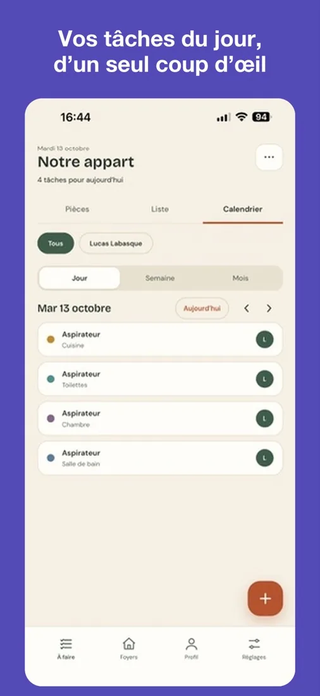
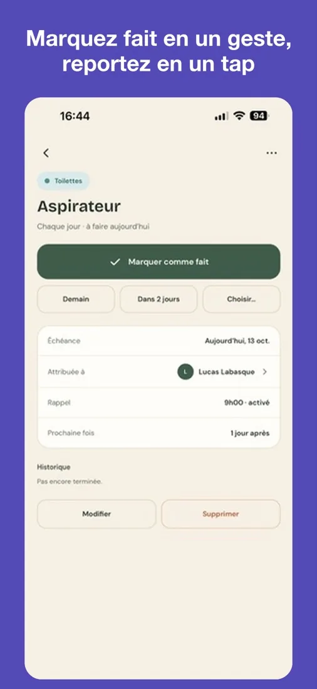
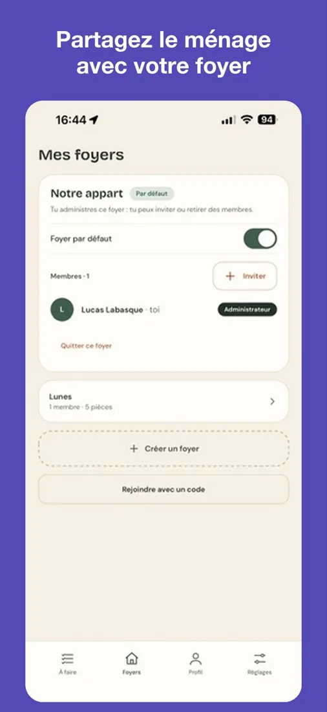

Le faccende, stanza per stanza
Pianifica le attività di ogni stanza, dividetele in casa e ricevi un promemoria al momento giusto. Attività fatta? Segnala con un tocco: la scadenza successiva si calcola da sola.
Uno sguardo all’app



Cosa ti aspetta
- Attività per stanza, con frequenza e prossima scadenza
- Tre viste: stanze, elenco e calendario
- Una casa condivisa: invita altre persone con un codice e assegna le attività
- Promemoria all’ora che preferisci
- Una modalità vacanza che mette in pausa i promemoria e rimanda le attività
- Senza pubblicità, e utilizzabile senza account sul tuo dispositivo
Domande frequenti
Serve un account?
No. Scegli «Usa senza account, su questo dispositivo»: le tue attività restano sul telefono. Un account Apple o Google serve per condividere una casa e ritrovare i tuoi dati su un altro dispositivo.
Come mi unisco a una casa?
Accedi, apri la scheda «Case», tocca «Unisciti con un codice» e inserisci il codice di invito ricevuto.
Non ricevo i promemoria
Controlla che le notifiche siano attive nella scheda «Impostazioni» dell’app, poi nelle impostazioni del telefono. Anche la modalità vacanza mette in pausa i promemoria.
Non riesco ad accedere
Controlla la connessione a internet e riprova. Se il problema continua, scrivici indicando il servizio usato (Apple o Google).
Come elimino il mio account?
Nella scheda «Profilo», tocca «Elimina il mio account». Puoi anche richiederlo via e-mail. I dettagli sono nell’informativa sulla privacy.
Contattaci
Un bug, una domanda, un’idea?
Scrivi a labasquelucas@gmail.com
Indica il modello del tuo telefono: rispondiamo entro pochi giorni.